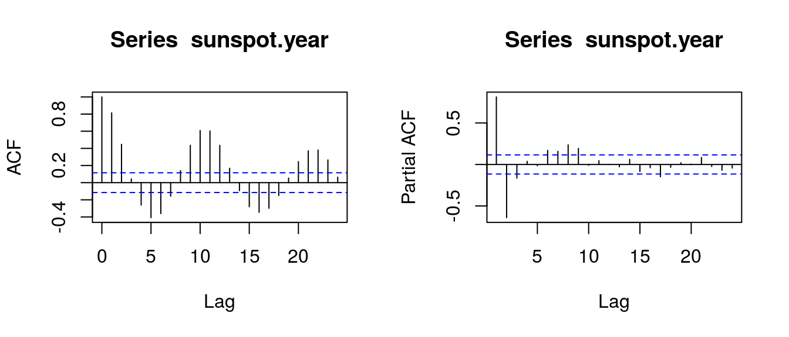
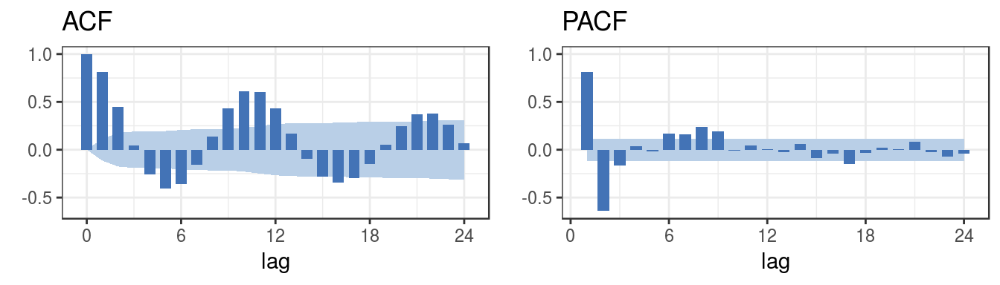
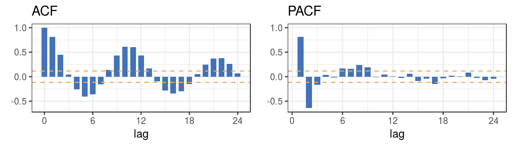

ggplot2When I study time series analysis, I were confused by the difference of ACF/PACF plot generated by SAS and R, using default method. I decided to do some research about the difference. More specific, why the lines, which indicates whether the autocorrelations are significantly difference from zero are different. Generally speaking, there are different methods to calculate confident interval for autocorrelations and partial autocorelations. In this article, I use ggplot2 to create two kinds of Correlogram, one for small sample size, one for large sample size.
Sample ACF(Autocorrelation function)
\(\hat{\rho}(h) = \hat{\gamma}(h)/\hat{\gamma}(0)\)
Sample ACOV(Autocovariance Function)
\(\hat{\gamma}(h) = \frac{1}{T} \sum_{t = h+1}^{T}(y_t-\bar{y})(y_{t-h}-\bar{y})\), where \(T\) is the total number of observations.
Variance of sample ACF (large sample size)
\(\text{var}(\hat{\rho}(h)) = \frac{1}{T}(1 + 2\sum_{j=1}^{h-1}\hat{\rho}(j)^2)\)
Variance of sample ACF (small sample size)
\(\text{var}(\hat{\rho}(h)) = 1/T\)
White noise test of ACF (\(95\%\) confident interval)
\((-\Phi^{-1}((1+0.95)/2)\sqrt{\text{var}(\hat{\rho}(h))},+\Phi^{-1}((1+0.95)/2)\sqrt{\text{var}(\hat{\rho}(h))})\), where \(\Phi(x)\) is standard cumulative normal distribution function.
Sample PACF(Partial autocorrelation function)
\(\hat{\phi}_{h+1,h+1} = \frac{\hat{\rho}_{h+1} - \sum^{h}_{j=1} \hat{\phi}_{hj} \hat{\rho}_{h+1-j}}{1-\sum_{j=1}^{h}\hat{\phi}_{hj} \hat{\rho}_j}\)
and
\(\hat{\phi}_{h+1,j} = \hat{\phi}_{hj} - \hat{\phi}_{h+1,h+1} \hat{\phi}_{h,h+1-j} \text{, }j = 1,\dots,h\)
Variance of sample PACF - both small and large sample size
\(\text{var}(\hat{\phi}_{hh}) = 1/T\)
White noise test for PACF (\(95\%\) confident interval) is as same as white noise test for ACF.
stats::acfThe correlogram plot by stats::acf only has method of white noise test for small sample size.
data("sunspot.year")opar <- par(no.readonly=TRUE)
par(mfrow=c(1,2))
acf(sunspot.year)
acf(sunspot.year, type = "partial")
par(opar)ggplot2I create a function called ggplot.corr for two types (for both large/small sample size) of white noise tests mentioned in section1.
ggplot.corr <- function(data, lag.max = 24, ci = 0.95, large.sample.size = TRUE, horizontal = TRUE,...) {
require(ggplot2)
require(dplyr)
require(cowplot)
if(horizontal == TRUE) {numofrow <- 1} else {numofrow <- 2}
list.acf <- acf(data, lag.max = lag.max, type = "correlation", plot = FALSE)
N <- as.numeric(list.acf$n.used)
df1 <- data.frame(lag = list.acf$lag, acf = list.acf$acf)
df1$lag.acf <- dplyr::lag(df1$acf, default = 0)
df1$lag.acf[2] <- 0
df1$lag.acf.cumsum <- cumsum((df1$lag.acf)^2)
df1$acfstd <- sqrt(1/N * (1 + 2 * df1$lag.acf.cumsum))
df1$acfstd[1] <- 0
df1 <- select(df1, lag, acf, acfstd)
list.pacf <- acf(sunspot.year, lag.max = lag.max, type = "partial", plot = FALSE)
df2 <- data.frame(lag = list.pacf$lag,pacf = list.pacf$acf)
df2$pacfstd <- sqrt(1/N)
if(large.sample.size == TRUE) {
plot.acf <- ggplot(data = df1, aes( x = lag, y = acf)) +
geom_area(aes(x = lag, y = qnorm((1+ci)/2)*acfstd), fill = "#B9CFE7") +
geom_area(aes(x = lag, y = -qnorm((1+ci)/2)*acfstd), fill = "#B9CFE7") +
geom_col(fill = "#4373B6", width = 0.7) +
scale_x_continuous(breaks = seq(0,max(df1$lag),6)) +
scale_y_continuous(name = element_blank(),
limits = c(min(df1$acf,df2$pacf),1)) +
ggtitle("ACF") +
theme_bw()
plot.pacf <- ggplot(data = df2, aes(x = lag, y = pacf)) +
geom_area(aes(x = lag, y = qnorm((1+ci)/2)*pacfstd), fill = "#B9CFE7") +
geom_area(aes(x = lag, y = -qnorm((1+ci)/2)*pacfstd), fill = "#B9CFE7") +
geom_col(fill = "#4373B6", width = 0.7) +
scale_x_continuous(breaks = seq(0,max(df2$lag, na.rm = TRUE),6)) +
scale_y_continuous(name = element_blank(),
limits = c(min(df1$acf,df2$pacf),1)) +
ggtitle("PACF") +
theme_bw()
}
else {
plot.acf <- ggplot(data = df1, aes( x = lag, y = acf)) +
geom_col(fill = "#4373B6", width = 0.7) +
geom_hline(yintercept = qnorm((1+ci)/2)/sqrt(N),
colour = "sandybrown",
linetype = "dashed") +
geom_hline(yintercept = - qnorm((1+ci)/2)/sqrt(N),
colour = "sandybrown",
linetype = "dashed") +
scale_x_continuous(breaks = seq(0,max(df1$lag),6)) +
scale_y_continuous(name = element_blank(),
limits = c(min(df1$acf,df2$pacf),1)) +
ggtitle("ACF") +
theme_bw()
plot.pacf <- ggplot(data = df2, aes(x = lag, y = pacf)) +
geom_col(fill = "#4373B6", width = 0.7) +
geom_hline(yintercept = qnorm((1+ci)/2)/sqrt(N),
colour = "sandybrown",
linetype = "dashed") +
geom_hline(yintercept = - qnorm((1+ci)/2)/sqrt(N),
colour = "sandybrown",
linetype = "dashed") +
scale_x_continuous(breaks = seq(0,max(df2$lag, na.rm = TRUE),6)) +
scale_y_continuous(name = element_blank(),
limits = c(min(df1$acf,df2$pacf),1)) +
ggtitle("PACF") +
theme_bw()
}
cowplot::plot_grid(plot.acf, plot.pacf, nrow = numofrow)
}ggplot.corr(data = sunspot.year, lag.max = 24, ci= 0.95, large.sample.size = TRUE, horizontal = TRUE)
ggplot.corr(data = sunspot.year, lag.max = 24, ci= 0.95, large.sample.size = FALSE, horizontal = TRUE)
Wei (1990) SAS (n.d.)
SAS. n.d. SAS Ets (R) 14.1 User’s Guide the Timeseries Procedure. http://support.sas.com/documentation/cdl/en/etsug/68148/HTML/default/viewer.htm#etsug_timeseries_details08.htm.
Wei, William. 1990. Time Series Analysis: Univariate and Multivariate Methods. Second Edition.